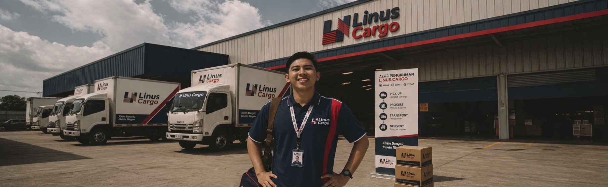

ALFIN ILHAM
Profesional logistik dengan 6+ tahun pengalaman, dari asisten driver (kenek) hingga Supervisor Order Management dan Founder Linus Cargo. Menginisiasi sistem centralized vendor management berbasis spreadsheet yang memangkas personel dari ±14 menjadi 4–5 orang, serta membangun platform digital cargo dari nol.

Dari Lapangan ke Digital Logistics
PT Kawan Lama Group
Asisten Driver → Transport Planning & 3PL Operations Staff
- Mulai sebagai asisten driver (kenek), memahami operasional distribusi.
- Maret 2020: dipercaya mengelola schedule driver & fleet management.
- 4 bulan kemudian pindah ke Vendor Management (3PL Operations).
- Membantu pemenuhan armada eksternal sesuai permintaan warehouse.
- Inisiasi sistem centralized vendor management berbasis spreadsheet otomatis – efisiensi order & monitoring.
- Hasil: personel order, monitoring, invoice GR berkurang dari ±14 menjadi 4–5 orang.
- Optimalisasi route planning & monitoring berbasis sistem.

PT Lidah Buaya Group (Linus Logistics)
Supervisor Order Management
- Mengelola distribusi hingga 4.500 ton per bulan, akurasi 98%.
- Mengubah mindset staff: KPI, SLA, dan pentingnya WMS.
- Mewajibkan komunikasi lintas departemen dalam grup (Sales, PPIC, BOA, Owner).
- Mengawasi PPIC dalam MPS (Make to Stock) dan sinkronisasi Make to Order dengan shipdate.
- Menginisiasi planning by maps untuk optimasi pengiriman.

Linus Cargo
Founder & Digital Logistics Architect
- Menginisiasi unit bisnis digital cargo atas instruksi owner (proyek mandek 1 tahun).
- Merancang framework & business process, analisa SWOT kompetitor untuk pricing.
- Mengembangkan website order & tracking (Laravel + VSCode), integrasi Swagger API.
- Membuat SOP digital workflow, iklan promosi, kelola sosial media.
- Mendorong transformasi logistik modern, transparan, dan efisien.

Soft · Hard · Digital Tools
Soft Skills
Hard Skills
Software & Tools
Linus Cargo – Digital Logistics Platform

linuscargo.com
Platform digital cargo end‑to‑end: order management, tracking, integrasi API. Dibangun dari nol sebagai founder. Mencakup business process, frontend, dan workflow monitoring.
Pendidikan & Informasi
🎓 Universitas Pelita Bangsa – Manajemen Ekonomi Bisnis (Konsentrasi MSDM)
2020 – 2025 (Cuti mulai semester 8) | IPK 3.37
🌐 Bahasa
Bahasa Indonesia — Aktif
Bahasa Inggris — Intermediate (menengah)
📍 Lokasi
Magelang, Jawa Tengah, Indonesia — siap relokasi / remote
Mulai Percakapan Baru
Open for strategic roles, consulting, or digital transformation leadership.
📍 Magelang, Central Java, Indonesia — ready for relocation / remote